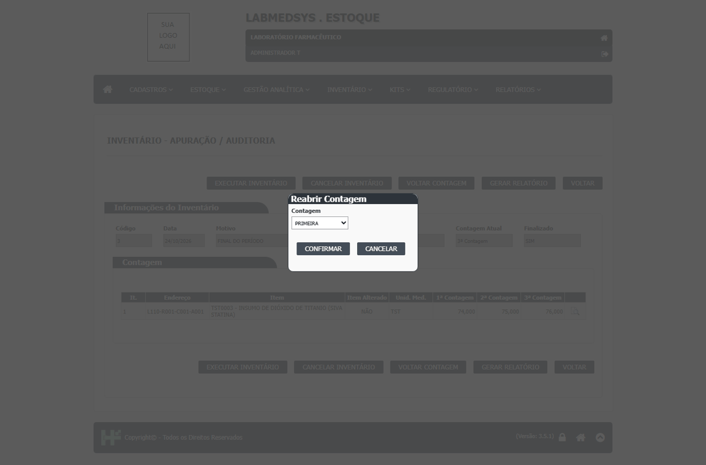
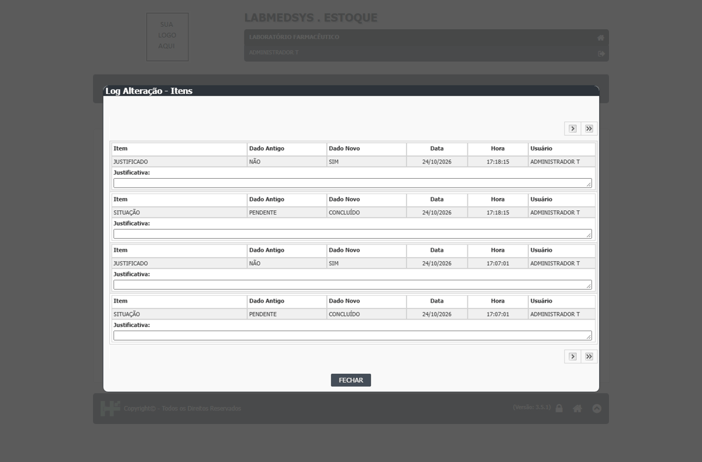
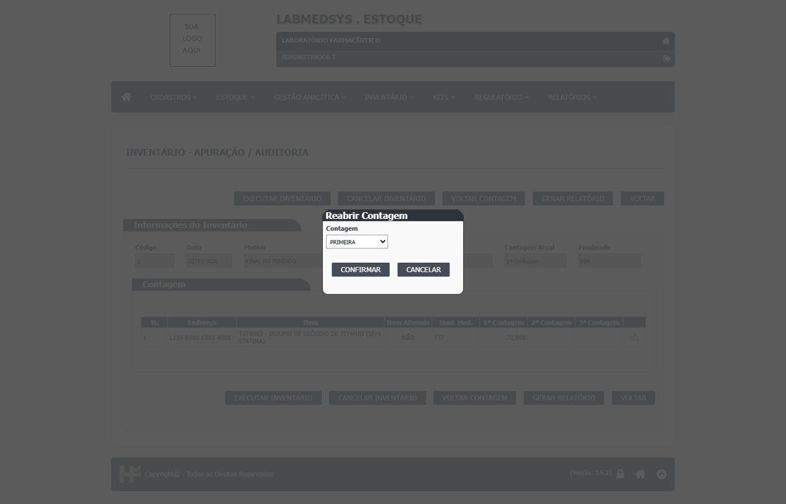
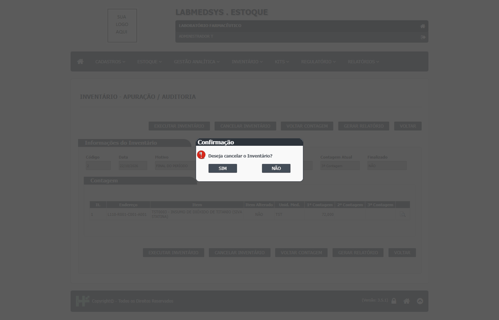
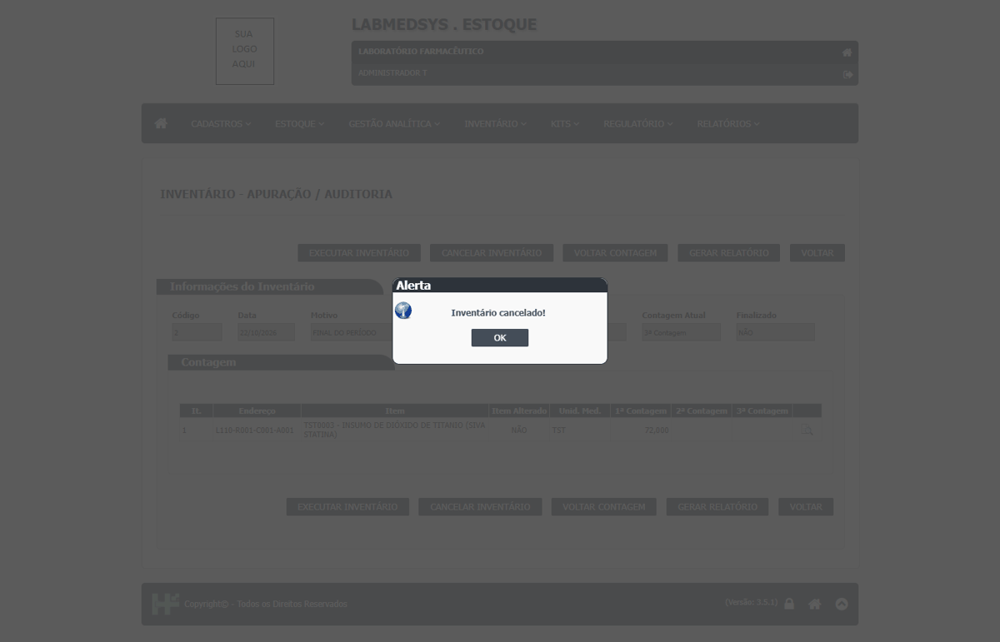
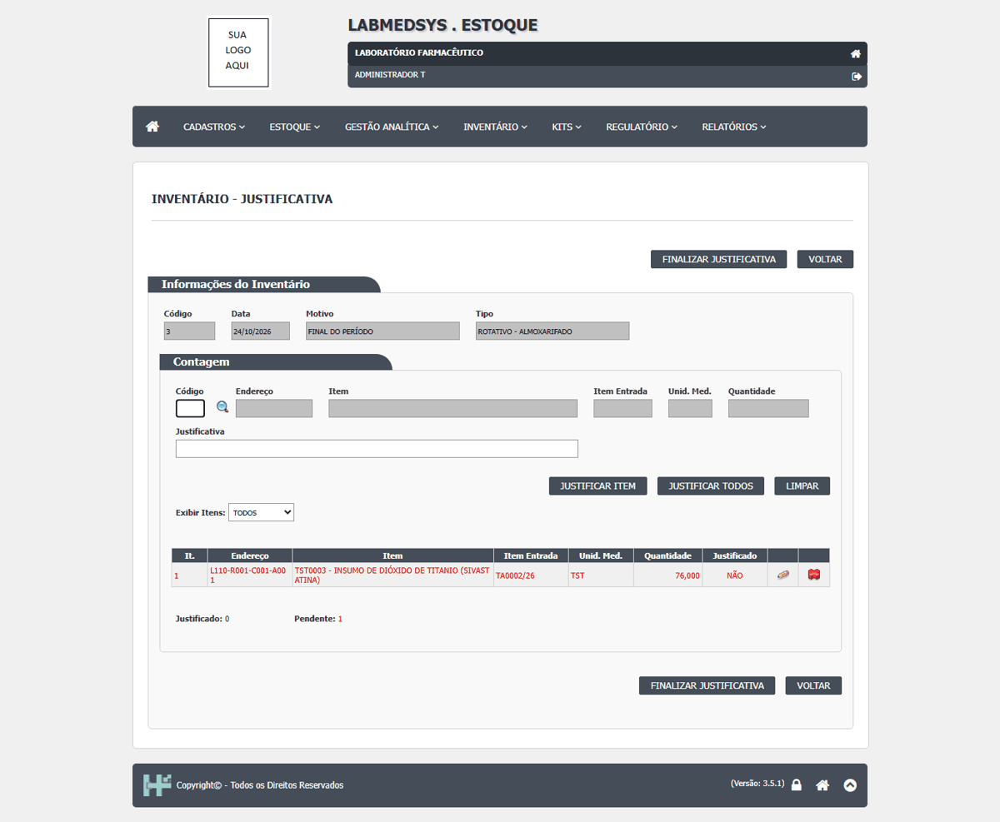
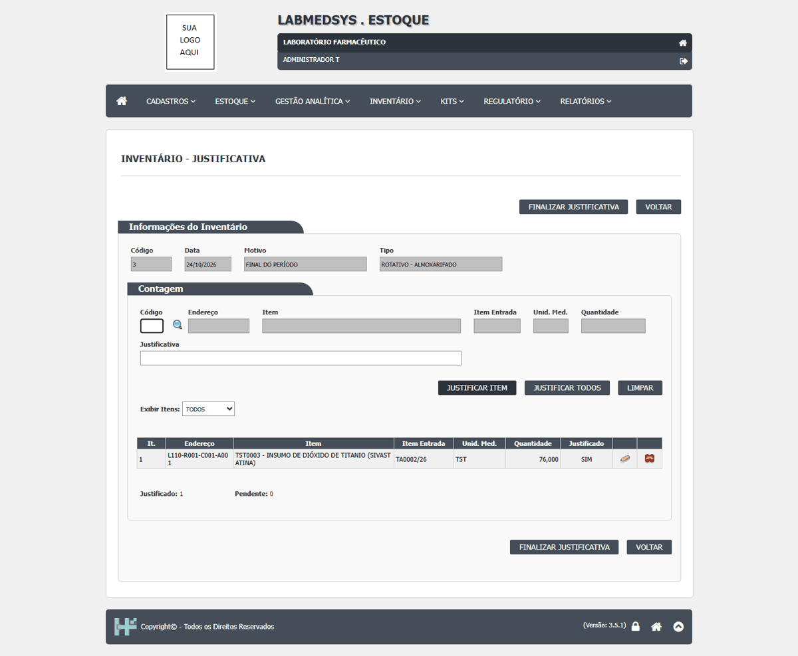

DV-EST-130 · O Inventário do Mês deixa de fora os itens com saldo e sem custo, e declara o valor total sem avisar
Outubro/2026 lista só `20011`, `20021`, `TST0002` e `TST0003` e declara "Importa o Presente INVENTÁRIO no valor total de R$ 422.473,12" por extenso. Não aparecem os itens `TESTER805` (224 un.), `TESTER806` (700), `TESTER901` (50) e `TST0001` (80), que têm saldo na Disponibilidade e custo médio zerado ou ausente. A conta do que aparece fecha (`TST0003`: 479 × 841,28 = 402.973,12), mas o relatório diz que o inventário está completo e não está. O custo do `TESTER805` também é 500,00 no relatório de Aquisição e 0,00 no RC04.
Como reproduzir o erro, passo a passo
- Abrir Relatórios › Inventário do Mês, grupo em branco, mês outubro, ano 2026, e GERAR RELATÓRIO.
- Comparar com a Disponibilidade do Lote.
Esperado
Todo item com saldo aparece (valor zero ou com aviso).
Obtido
Item com saldo e sem custo some e o total é declarado como o do inventário.
Evidência (captura da tela)

DV-EST-136 · Inventário: reabrir a contagem e cancelar a justificativa não pedem motivo e não deixam registro; a execução também não entra no log
Na Apuração, **VOLTAR CONTAGEM** pede só a escolha de PRIMEIRA, SEGUNDA ou TERCEIRA e "Confirma reabertura da contagem?", e responde "A Contagem foi reaberta!": sem justificativa e a situação volta a DIVERGENTE. Na Justificativa, o ícone **Cancelar Justificativa** apaga a justificativa da linha (SIM → NÃO) sem confirmação e sem motivo. O "Ver Log Alteração" do inventário não mostra nenhum dos dois, nem a execução do inventário (que ajustou o saldo): só mostra a justificativa e a mudança de situação para CONCLUÍDO. Quem ajusta o estoque pode refazer a contagem e apagar as explicações sem que a Qualidade tenha como ver.
Como reproduzir o erro, passo a passo
- Gerar um inventário, fazer as três contagens e justificar.
- Em Apuração, VOLTAR CONTAGEM → TERCEIRA → CONFIRMAR.
- Em Justificativa, clicar em Cancelar Justificativa na linha.
- Abrir Ver Log Alteração do inventário e procurar os dois eventos e a execução.
Esperado
Cada reabertura, cancelamento e execução pede motivo e fica no log com usuário e hora.
Obtido
Nenhum motivo pedido; nenhuma linha no log.
Evidência (captura da tela)


DV-EST-049 · No inventário, a mesma pessoa conta três vezes, justifica e apura, sem nenhuma restrição
O mesmo usuário fez a 1ª, a 2ª e a 3ª contagem, justificou a divergência e executou a apuração do inventário, e o saldo foi ajustado (75 para 72). O sistema não pede um segundo contador nem avisa que quem conta também apura.
Como reproduzir o erro, passo a passo
- Gerar um inventário rotativo de almoxarifado (Inventário, almoxarifado TESTE ALMOXARIFADO).
- Em Inventário - Contagem, registrar a 1ª contagem (70) e finalizar; repetir a 2ª (73) e a 3ª (72), com o mesmo usuário.
- Em Inventário - Auditoria/Justificativa, justificar o item com o mesmo usuário e finalizar.
- Em Inventário - Apuração, executar o inventário com o mesmo usuário.
Esperado
Contagens por pessoas diferentes e apuração por um responsável diferente de quem contou (ou, no mínimo, um aviso e o registro de que foi a mesma pessoa).
Obtido
Nenhum aviso. Mensagens: "1ª Contagem finalizada! Necessário efetuar nova contagem!", "3ª Contagem finalizada! Necessário justificar divergências!", "Justificativa finalizada!", "Processamento concluído! Foram processados: 1 item(ns)."
Evidência (captura da tela)


DV-EST-050 · Cancelar o inventário não pede justificativa; reabrir contagem oferece contagens que não existem
Na Apuração, o botão CANCELAR INVENTÁRIO pergunta só "Deseja cancelar o Inventário?" e cancela, sem pedir o motivo. O botão VOLTAR CONTAGEM oferece PRIMEIRA, SEGUNDA e TERCEIRA mesmo quando só uma contagem foi feita.
Como reproduzir o erro, passo a passo
- Abrir um inventário e fazer só a 1ª contagem igual ao saldo; finalizar ("Inventário concluído!").
- Em Inventário - Apuração, abrir o inventário e clicar em VOLTAR CONTAGEM: a lista tem PRIMEIRA, SEGUNDA e TERCEIRA.
- Confirmar a reabertura ("A Contagem foi reaberta!").
- Clicar em CANCELAR INVENTÁRIO e SIM.
Esperado
Pedir justificativa para cancelar e só oferecer a reabertura das contagens que existem.
Obtido
"Deseja cancelar o Inventário?" e "Inventário cancelado!", sem justificativa; o endereço foi liberado. Nenhum campo de motivo na tela.
Evidência (captura da tela)



DV-EST-139 · Inventário: quem justifica só vê a quantidade da 3ª contagem, sem o saldo do sistema nem as contagens anteriores
A tela de Justificativa mostra endereço, item, item de entrada, unidade, a quantidade da 3ª contagem (76) e se já foi justificado. Não mostra o saldo do sistema nem a 1ª e a 2ª contagens (74 e 75); a pessoa escreve a justificativa sem ver a diferença. As contagens só aparecem na Apuração.
Como reproduzir o erro, passo a passo
- Fazer as três contagens e abrir o inventário na tela Justificativa.
Esperado
Mostrar saldo do sistema e as três contagens para quem justifica.
Obtido
Só a 3ª contagem.
Evidência (captura da tela)

DV-EST-137 · Inventário: o campo de justificativa corta em 100 caracteres sem avisar e a coluna Justificativa do log fica sempre vazia
Um texto de 173 caracteres ficou com 100 no campo, sem mensagem. Na janela "Ver Log Alteração" do inventário, a linha "Justificativa:" aparece vazia em todos os eventos, mesmo para os que tiveram texto.
Como reproduzir o erro, passo a passo
- Justificar a linha com um texto de mais de 100 caracteres.
- Abrir o Ver Log Alteração do inventário.
Esperado
Limite informado ao usuário; texto da justificativa visível no log.
Obtido
Corte silencioso e log sem o texto.
Evidência (captura da tela)


DV-EST-138 · Contagem do inventário aceita 99.999 e 0 sem pedir confirmação
Para um endereço com saldo de cerca de 72, a contagem aceitou `99999` (gravou 99.999,000) e `0` sem alerta. Só vazio, letras e mais de uma vírgula são recusados.
Como reproduzir o erro, passo a passo
- Abrir a contagem, digitar 99999 e REGISTRAR CONTAGEM.
Esperado
Pedir confirmação para valor muito acima ou abaixo do saldo.
Obtido
Aceito sem aviso.
Evidência (captura da tela)